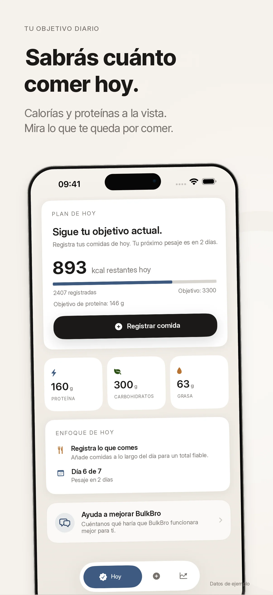
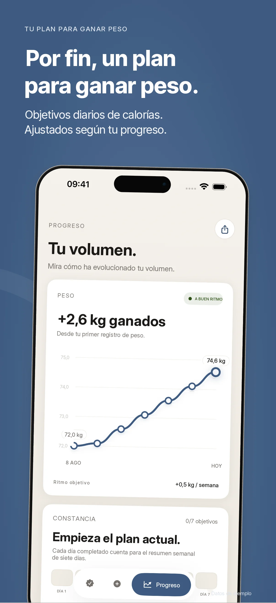
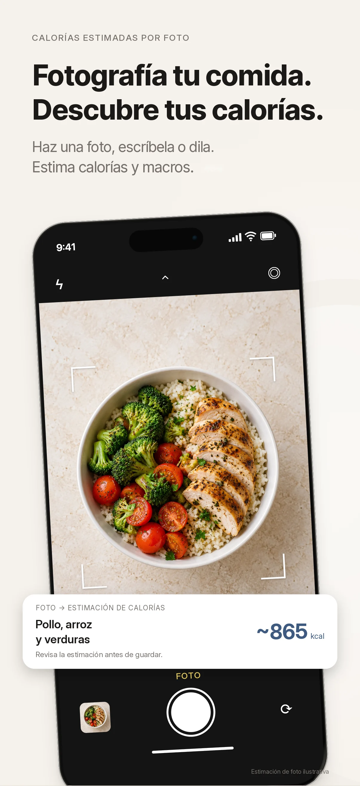

Objetivo dinámico
Un objetivo de calorías que se adapta a tu evolución.
 BulkBro
BulkBroNutrición y progreso
BulkBro calcula tus calorías y macros, sigue tu peso y ajusta el plan con tus resultados reales.
Descargar en el App StoreDiseñada para iPhone · Por Kestora Labs


Hecha para una función clara
Un objetivo de calorías que se adapta a tu evolución.
Proteína, carbohidratos y grasas sin cálculos manuales.
Peso, constancia y tendencias en un solo lugar.
En tu día a día
Un objetivo de calorías que se adapta a tu evolución. Proteína, carbohidratos y grasas sin cálculos manuales.

BulkBro ofrece información general sobre nutrición y no sustituye el consejo de un profesional sanitario.